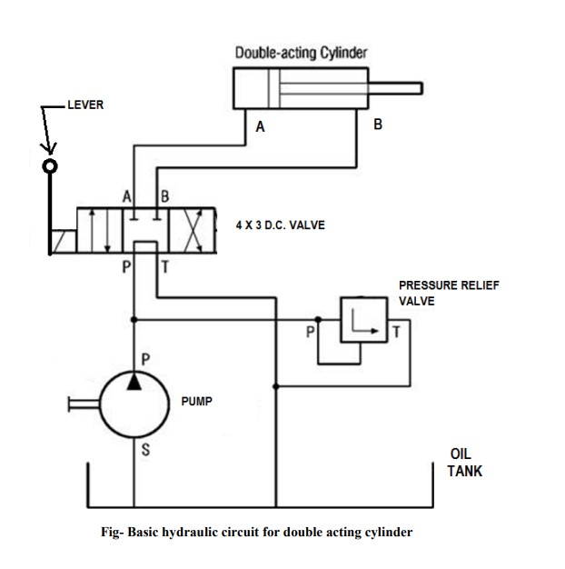

Hydraulic Circuit
Aim:
Study of Basic hydraulic circuit for the working of double acting cylinder and a hydraulic motor.
Procedure:
- Switch on the three phase connection given to Induction motor
- Rotate pressure relief valve anticlockwise direction for two minutes
- By observing the pressure gauge of pressure line adjust pressure between 12 to 15 kgf/cm²
- Check oil level in tank to be full shown by indicator
- Observe the reciprocating motion of double acting cylinder and hydraulic motor by varying the Pressure, using pressure knob.
- Observe the rotary motion of hydraulic motor.

Simulation
Calculation
Result